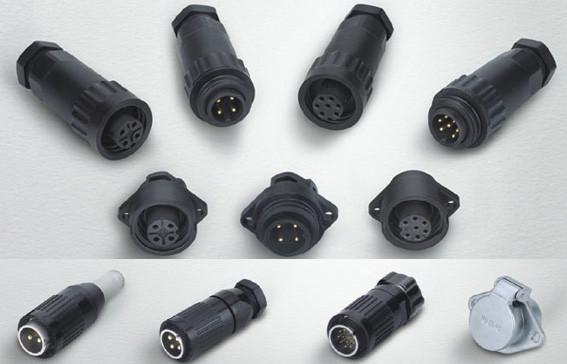

连接器的工作原理
2019-10-24
连接器的工作原理
对于连接器，大家可能还没有更多的了解。所谓连接器，是液面以下相互连通的两个或几个容器。盛有相同液体、液面上压力相等的连通器，其液面高度相等。
（1） 连接器盛有相同液体，但液面上压力不等，则液面的压力差等于连通器两容器液面高差所产生的压差。
（2） 连接器液面上压力相等，但两侧有互不相混的不同液体，自分界面起两液面之高度与液体密度成反比。
连接器原理在工程上有着广泛的应用。如各种液面计（水位计、油位计等），水银真空计，液柱式风压表，差压计等，都是应用连通器原理制成的。

通过了解连接器的定义及工作原理有助于我们更好的认识及开拓连接器的市场。
连接器的基本性能
连接器知识连接器的基本性能可分为三大类：即机械性能、电气性能和环境性能。 另一个重要的机械性能是连接器的机械寿命。机械寿命实际上是一种耐久性（durability）指标，在国标GB5095中把它叫作机械操作。它是以一次插入和一次拔出为一个循环，以在规定的插拔循环后连接器能否正常完成其连接功能（如接触电阻值）作为评判依据。
下一篇：工业自动化综合装置